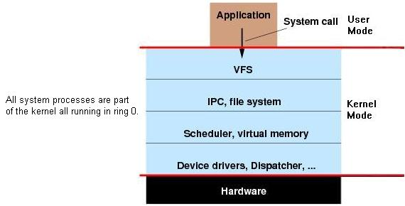
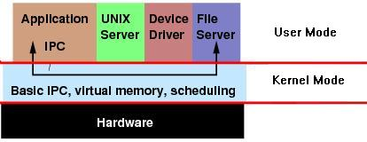
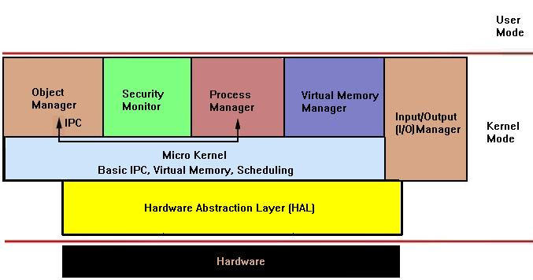

Kernel: Basic Concepts Part 2
Here's what's on the menu for today:
- Hardware Abstraction
- Kernel: A new perspective
- Kernel designs: Abstract: Primary Design Models
- Kernel designs: Abstract: Secondary Design Models
This tutorial will cover the glue between the bootloader and beginning kernel design. This will be the glue that brings everything together for us to see what kernels really are, and to understand what we need to do.
All the concepts listed here will be very important in the next few tutorials, as we will start designing and developing our Hardware Abstraction Layer (HAL) and our uber-1337 kernel. err ... wait, that's actually the next tutorial!!
So, lets both lay back in our comfortable seats and take a look at another fun happy tutorial! Oh right, and this tutorial is not that big either, which is nice 😀
Note: This tutorial recommends that our readers have read through [Tutorial 2] (Fix link) before proceeding.
I plan on adding a section describing exokernels. They are a relatively new kernel design concept. I do not plan on implementing this design within this series, but feel our readers might be interested in the kernel design. Perhaps use the design in their own OS?
Hardware Abstraction
Hardware Abstraction is very important. By now, you may know how complex hardware programming can be, and how very hardware dependent it is. This is where a Hardware Abstraction Layer (HAL) comes in.
A HAL is a software abstraction layer used to provide an interface to the physical hardware. It is an abstraction layer. These abstractions provide a way to interact with devices, while not needing to know the details of a particular device or controller.
Normally in modern OSs, the HAL is a basic Motherboard chipset driver. It provides a basic interface between the kernel and the hardware of the machine, including the processor. This is great, as the Kernel can interact with the HAL whenever it needs access to the hardware. This also means that the kernel can be completely hardware independent.
This also allows us to think in terms of the device itself, rather then specific controllers or mappings. This helps make the kernel itself cleaner as well.
Another great benefit comes from abstraction itself. If we decide to port our OS to a system with different hardware, all we need to do is develop a new HAL for it. This assumes that the HAL is designed very well to allow this.
Most modern operating systems use a HAL in some way. We will also be developing a HAL to act as a motherboard chipset driver between the chipset hardware and the kernel. We will start developing on our HAL within the next tutorial, when we abstract the processor itself behind the HAL.
Kernel: A new perspective
A "Kernel" is the central component of a system. This system can be anything. The Kernel is the core of the system; it provides the very basic facilities for the management of efficient execution of the system.
In an operating system, this all-so-powerful Kernel provides the most basic interface to the system hardware and resources. It also provides the most basic management facilities, such as processor management, I/O management, memory management, and process management. The Kernel can contain more, depending on the complexity of the system being developed.
Okay...The previous list might sound familiar... hmm ..Where have we seen that before? We actually looked at each inside of [Tutorial 2] (fix link).
Lets look at this closer for better understanding.
Kernel: Putting everything together
Memory Management
Okay, then! Remember again from [Tutorial 2] (fix link). We have created a basic list of items regarding memory management and protection. Lets take another look at that again:
Memory Management refers to:
- Dynamically giving and using memory to and from programs that request it.
- Implementing a form of Paging, or even Virtual Memory.
- Insuring the OS Kernel does not read or write to unknown or invalid memory.
- Watching and handling Memory Fragmentation.
Memory Protection refers to:
- Accessing an invalid descriptor in protected mode (Or an invalid segment address)
- Overwriting the program itself.
- Overwriting a part or parts of another file in memory.
Right about now, you should have a better understanding of everything within [Tutorial 2] (fix link).
Remember that the Kernel, as it is running in ring 0, has direct control over every single byte in memory...Even if there is none. Also, remember that this is all running directly on physical memory. What happens if we run out of memory? What would happen if we write to nonexistent memory? What about memory locations used by hardware devices? This also does not touch the "gaps" that may be found throughout memory as well.
Warning: Writing random locations in physical memory may (Depending on where you write to) can cause malfunctions (Depending if a hardware device uses that area of memory), or completely make the system unbootable, and completely useless. (Depending if you write over the BIOS data area.) Never directly probe memory!
With all of this in mind, you should begin to see how important it is to properly manage physical memory.
A Kernel that properly manages the physical memory can create a virtual interface between applications and memory. This can be done through separating User Space and Kernel Space code and data, and through Virtual Addressing.
Because of the many problems with directly running in physical memory, we can emulate a better method of memory. This memory emulation (Virtual Memory) can emulate a system with a lot more memory then physical RAM, where each application uses its own virtual memory address space.
Processor Management
This is a new one. As you know, the BIOS ROM initializes and starts up the primary processor. It only starts a single core. If you are running your OS on a system with a multicore processor, or a system with multiple processors, you will need to start up the other processors and cores manually.
Letting applications play with the different processors at any time can cause fatal system problems. Because of this, we should never allow applications the ability to do this.
I/O Device Management
Similar to physical memory, allowing applications direct access to controller ports and registers can cause the controller to malfunction, or system to crash. With this, depending on the complexity of the device, some devices can get surprisingly complex to program, and uses several different controllers. Because of this, providing a more abstract interface to manage the device is important. This interface is normally done by a Device Driver or Hardware Abstraction Layer. This allows us to think in terms of the device, rather then its details.
Frequently, applications will require access to these devices. The Kernel must maintain the list of these devices by querying the system for them in some way. This can be done through the BIOS, or through one of the various system buses (Such as PCI/PCIE, or USB.) When an application requests an operation on a device (Such as, displaying a character), the kernel needs to send this request to the current active video driver. The video driver, in turn, needs to carry out this request. This is an example of Inter Process Communication (IPC).
Process Management
This is the most important task of the Kernel, and any computer for that matter. The Kernel needs a way of allocating execution time, and executing and management of different applications and processes.
This is where Program Management, and Multitasking comes in. These terms should sound familiar from Tutorial 2. Lets take another look at that from tutorial 2:
Program Management is responsible for:
- Insuring the program doesn't write over another program.
- Insuring the program does not corrupt system data.
- Handle requests from the program to complete a task (such as allocate or deallocate memory).
Multitasking refers to:
- Switching and giving multiple programs a certain timeframe to execute.
- Providing a Task Manager to allow switching (Such as Windows Task Manager).
- TSS (Task State Segment) switching. Another new term!
- Executing multiple programs simultaneously.
To execute an application, the Kernel must set up the applications own Virtual Address Space (VAS), and load the file into the VAS. the Kernel then sets up the applications stack, and jumps to it to begin execution.
Through Virtual Addressing, we can insure the application does not run into system memory problems.
In a multitasking system, the Task Manager will allocate a certain amount of time to each process, and only execute them within that time frame. It will then switch between running applications. Because the time allocated is small, the Task Manager can switch between running process quickly, giving the illusion of multiple processes running simultaneously.
This can either be done through hardware or software. The processor supports hardware task switching through the use of its Task State Segment (TSS) register.
The System API
By now, you should start being able to understand how everything fits together, and where a lot of the concepts from [Tutorial 2] (fix link OSDev2.html) starts to come in. Yet, there is one little detail that we have not covered yet.
How does the application ask the Kernel for request to a device or system resource? We have seen methods on how the OS manages and control the application, but how does the application control the system?
This is where the system Application Programming Interface (API) comes in. The System API is an API that applications may use to interact with the Kernel and other system software.
There are a lot of methods for creating the System API. Most systems support System API routines through interrupts. For an example, The Linux Kernel System API primarily uses interrupt number 0x80 for system routines.
Wow, that is a lot of stuff, huh? Don't worry if you don't understand this yet. Everything will be clear soon enough 😀
Kernel Designs - Abstract: Primary Design Models
By now, you may start realizing how important Kernels are, and where they fit in.
There has been a lot of operating systems that have been developed using a lot of different designs and setups. A lot of these designs have some similar basic concepts.
There are a lot of different ways to construct kernels. We will look some of the more used designs here.
Monolithic kernel Design
 In a Monolithic Kernel, all system process run as part of the Kernel at Ring 0
Lets first look at the term "Monolithic". The first part--"Mono" means "one". The second part--"lithic" means "it is of or like stone".
In a Monolithic kernel, the entire Kernel executes in Kernel space at Ring 0. It provides a higher level interface over computer resources and hardware. It also provides a basic set of system calls via the System API.
In a monolithic kernel, most (if not all) Kernel services are part of the kernel, itself. This does not mean that the services cannot be independent of each other. However, the software is very tightly integrated to the rest of the kernel. This makes monolithic kernels very fast and efficient, compared to other designs.
Because all OS services run in kernel space as part of the kernel (or as an extension to the kernel), if there is a problem with a device driver or a system service program, it can cause the entire system to crash.
When an application requests a system service, it executes a system call through the System API.
Examples of Monolithic kernels
Several large scale operating systems use a hybrid kernel, including but not limited to:
- Unix-like kernels
- Linux
- Syllable
- Unix kernels
- BSD
- FreeBSD
- NetBSD
- BSD
- Solaris
- AI
- DOS
- DR-DOS
- MS-DOS
- Microsoft Windows 9x series (95, 98, Windows 98SE, Me)
- Mac OS kernel, up to Mac OS 8.6
- OpenVMS
- XTS-400
Microkernel Design
 In a Microkernel design, the Kernel only provides basic functionality needed for user mode system services.
A Microkernel is a kernel design that provides no OS services at all, only the mechanisms needed to implement those services. Because of this, the Kernel itself is usually quite small compared to Monolithic kernels. For example, a microkernel may implement low level memory management and thread management, and Inter Process Communication (IPC).
The above image displays a microkernel. Notice the kernel only implements the very basics of basics. In this case, it implements basic process management and scheduling, Inter Process Communication (IPC), and basic virtual memory management.
The Kernel would use external user mode services, such as Device Drivers and Filesystems, rather then everything implemented as part of the kernel (As with Monolithic kernels.) Because of this, if an external service crashes, the system may still be functional, and the system will not crash.
Inter Process Communication (IPC) and understanding Servers and Device Drivers is important in understanding how Microkernels work.
Microkernel Servers
Microkernel "Servers" are external programs that is granted special privileges by the kernel that normal programs do not have. These "privileges" may be direct access to hardware, or even physical memory. This allows server programs to interact directly with the hardware devices they are controlling. Wait...It sounds like a device driver, doesn't it? Yep 😀 That's basically what they are.
Remember that microkernels are very minimal. They rely on external programs - servers - to help out.
Servers needed by the kernel itself is normally loaded into memory before the kernel is executed. An example that will be needed is a file system server, that will contain the code for parsing the filesystem. Because the Kernel has no filesystem code, it has no way of loading the filesystem server! Because of this, it needs to be loaded before the kernel is executed.
How can we do this? There are several ways. One method is loading a complete RAM image containing both the kernel and supported severs in it. Another method is simply loading the necessary servers at startup within the bootloader, and in someway giving the server information to the kernel upon executing. In both cases, the bootloader can determine what filesystem loading code to use, however the code can interact with the filesystem server without ever needing to load it in the first place! Cool, huh?
Note: A "server" may also be called a "daemon".
Inter Process Communication (IPC)
IPC is very important in microkernels. It allows separate processes to communicate with each other, usually by sending messages, but it can also be invoked by using shared memory.
There are a lot of ways a process can "signal" another process. With regards to microkernel severs, the most commonly used is also one of the easiest to understand - message passing.
IPC allows the servers and kernel to interact with each other.
Synchronous IPC: In Synchronous IPC, The process sending the message is suspended until the other process responds. If the other process is busy, the message is stored in a queue for that process to act upon when ready.
Asynchronous IPC: Similar to Synchronous IPC, however both processes continue executing. That is, the process is not suspended.
Kernel Designs - Abstract: Secondary Design Models
Remember that there are countless of ways that kernels may be designed. The following are common design models that are based off of the primary design models (Monolithic and Microkernels).
Hybrid kernels
 Hybrid kernels are Microkernels with aspects from Monolithic kernels
A Hybrid kernel is a kernel combining aspects from both Monolithic and Microkernel designs.
Hybrid kernels usually has a structure similar to microkernels, but implemented as a monolithic kernel. Lets look at this another way for better understanding.
Hybrid Kernels, similar to microkernels, use separate sever programs for filesystems, device drivers, etc. However, like Monolithic Kernels, these severs execute as part of the Kernel, instead of user space.
There are some controversy on what the term "Hybrid Kernel" applies to. It may be called a "Microkernel", "Macrokernel", or "modified microkernel or modified macrokernel". Hybrid kernels are not in their own design; they are just modified Microkernels with some aspects from monolithic kernels. Do to this, there are some controversy on what to consider hybrid kernels.
Microsoft's NT Architecture uses a hybrid approach to their kernel design model. Microsoft describes their kernel as a "Modified microkernel".
Examples of Hybrid kernels
Several large scale operating systems use a hybrid kernel, including but not limited to:
- BeOS Kernel
- Haiku Kernel
- BSD
- DragonFly BSD Kernel
- XNU Kernel
- NetWare Kernel
- Plan 9 Kernel
- Inferno Kernel
- Windows (NT,2000,2003,XP,Vista) NT Kernel
- ReactOS Kernel
Nanokernel
Nanokernels, also known as Picokernels, are a very small kernel. Normally, this would be a minimal microkernel structure. As the kernel itself is very small, it must rely on other software and drivers for the basic resources within the system.
Conclusion
We will be developing a modified microkernel in this series. This will allow our readers to gain some experience and understanding in both monolithic and microkernel designs, as well as mixing the approaches into a Hybrid Microkernel. In fact, our kernel will look similar to that is displayed in this tutorial. We will touch upon the full design of our kernel within the next tutorial, along with developing the basic building blocks for our HAL to abstract processor dependencies using C++.